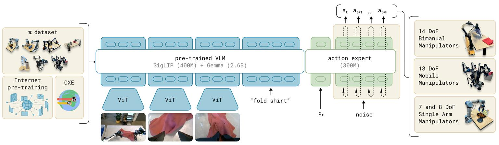

Method at a glance
How it works
- 01Observe and instructCombine camera images, a language instruction, and robot state.
- 02Generate an action chunkUse the pretrained vision-language backbone and flow-matching action expert.
- 03Deploy and evaluateConnect predictions to hardware, collect demonstrations, and assess behavior in real scenes.
Project workflow schematic.
From a general policy to a working robot
This project focuses on the practical steps between a pretrained robot foundation model and a physical experiment: configuring observations, collecting demonstrations, interfacing model actions with the robot, and evaluating the resulting behavior. The deployment work spans LeRobot SO-101 and Franka platforms.
A July 2025 seminar presentation by Guangyuan Wang and Haoliang Huang documents the initial SO-101 reproduction and demonstration-collection setup. Subsequent deployment work brought π₀.₅ to Franka, including the block-stacking demonstration shown below.
π₀.₅ on Franka: real-robot deployment
I deployed π₀.₅ on Franka for physical tabletop manipulation. The recording shows the arm picking up a pink block, placing it on a wooden block, and then adding a red block to the stack.
SO-101: real-robot demonstration
The SO-101 recording shows tabletop block manipulation with the leader/follower hardware used in the project. Together, the two recordings document deployment on different robot platforms.
Model architecture
π₀ is a vision-language-action model. It takes visual observations, language, and robot state as conditioning information and predicts a sequence of continuous actions. Its pretrained vision-language backbone provides visual and semantic representations; an action expert specializes that information for control.
The architecture presented in the seminar combines SigLIP visual encoding, a Gemma language backbone, and a separate action expert. Continuous action generation uses conditional flow matching: start from a noisy action sequence, estimate a denoising direction conditioned on the observation, and iteratively obtain an executable action chunk. This links multimodal understanding to smooth, high-frequency action generation.


Data and adaptation
The project uses custom real-world robot demonstrations for task-specific adaptation and evaluation. The July 2025 presentation documents SO-101 data collection with a leader/follower setup: the operator demonstrates a motion while the system records observations and corresponding robot actions.
The seminar also examines the original model’s multi-robot pretraining mixture, including Open X-Embodiment, Bridge, and DROID. That pretrained model provides the starting point for local deployment and task-specific demonstration collection.

Evaluation questions
The seminar examines three practical issues: whether a policy can recover after a disturbance, how behavior changes across tabletop positions, and how long open-loop action chunks affect error correction. It also asks which demonstrations support useful transfer and which may interfere with other skills.
The July 2025 deliverable documents the SO-101 reproduction and data-collection stage. It proposes shortening the action horizon and including more varied demonstrations for subsequent tests. These are experimental directions, rather than measured improvements reported by that presentation.
Original documents
Project reports, theses and retained presentations in their original language. Presentations are provided as static PDF exports; personal identifiers are removed where necessary.
Related resources
- π₀: A Vision-Language-Action Flow Model for General Robot ControlOriginal model paper
- OpenPIBaseline implementation
- LeRobotRobot-learning tooling
Reviewed against the July 2025 end-term seminar slides by Guangyuan Wang and Haoliang Huang and the retained Franka and SO-101 deployment recordings. The seminar documents the initial π₀/SO-101 work; the Franka recording documents the subsequent π₀.₅ deployment. The card combines frames at 36, 60 and 96 seconds from the Franka clip. Both full video streams retain their source frames and timing; the SO-101 room-audio track is omitted. Original model pretraining results and proposed evaluation directions remain separate from the local deployment demonstrations.